This first chapter is the map for the whole book. It starts with a quick history of Language AI: first we turned text into numbers by simply counting words (bag-of-words), then we learned embeddings that capture meaning (word2vec), then RNNs with attention let a model use context, and in 2017 the Transformer threw away recurrence and kept only attention. From the Transformer came two families: encoder-only representation models like BERT, which turn text into vectors, and decoder-only generative models like GPT, which write text one token at a time. The authors then argue that "large language model" should cover both families (even small ones), explain the two-step training recipe (pretraining then fine-tuning), list what LLMs are useful for and the ethical risks, and talk about hardware (VRAM, the "GPU-poor"), closed vs open models and frameworks. It ends with your first piece of code: loading Phi-3-mini with Hugging Face transformers and generating a joke about chickens.
The chapter has two halves. The first half is a history told as a chain of "this idea had a flaw, so the next idea fixed it". The second half is practical: what we call an LLM, how it is trained, what it is used for, what it costs, and how to run one. Each orange box is the idea that the next row reacts to.
The book is split into three parts. Page 23 is the title page of Part I, "Understanding Language Models"; page 24 is blank. The book prints no introduction text for the part, only the title.
Part I is made of chapters 1–3. Together they build the base that the rest of the book stands on:
Part II (from Ch.4) is about using pretrained models (classification, clustering, prompting, RAG, multimodal); Part III (from Ch.10) is about training and fine-tuning them. That split comes from the book's chapter list, not from this title page.
Part I is the driving-school theory class before you get the car: what the pedals are and why the engine works. Parts II and III are actually driving on the road. Where it breaks: in this book you write and run real code from the very first chapter, so theory and practice are mixed from day one.
The authors open with a big claim: humanity is at an inflection point (a turning point). The story, as they tell it:
But they add an important caveat that shapes the whole book: LLMs have been around for a while, smaller models are still relevant today, and LLMs are "much more than just a single model". There are many other techniques and models in Language AI worth knowing. The book wants to give a solid grasp of the fundamentals of both LLMs and Language AI in general. This chapter is the scaffolding: it introduces the concepts and terms used in every later chapter.
The chapter sets out to answer four questions:
Pick a milestone and see the average sign-ups per day it implies. The milestones are the book's; the per-day division is just arithmetic (real growth was not even day to day).
Think of how UPI went from "what's that?" to every chai stall having a QR code. ChatGPT was that kind of moment for language software: not a new idea from nowhere, but the moment the idea became something everybody used. Where it breaks: UPI was one product built on one standard; "LLMs" are a whole family of models, many of them small and not chatbots at all, which is exactly the authors' point.
"Why did LLMs suddenly matter in 2022–23?" A good answer: the Transformer (2017) made it possible to train much bigger models in parallel; GPT-2 and GPT-3 showed scale gives fluent text; ChatGPT added instruction-tuning and a chat product, which made it usable by everyone (1M users in 5 days). Then open models caught up, so companies could build on them.
Artificial intelligence (AI) usually means computer systems built to do tasks close to human intelligence, such as speech recognition, language translation and visual perception. It is the intelligence of software, as opposed to that of humans.
The book quotes a more formal definition by John McCarthy (2007), one of the founders of the AI discipline. In short: AI is the science and engineering of making intelligent machines, especially intelligent programs. It is related to using computers to understand human intelligence, but AI does not have to limit itself to methods that are biologically observable (it need not copy how brains work).
Because AI keeps changing, the word has been used for many systems that are not truly intelligent. Example: characters in computer games, NPCs (nonplayable characters), are often called "AI" even though many are nothing more than if-else statements.
Language AI is the subfield of AI focused on technologies that can understand, process and generate human language. Because machine learning has been so successful at language problems, Language AI is often used interchangeably with natural language processing (NLP).
The authors deliberately use the wider term "Language AI" so it can include technologies that are not LLMs but still matter a lot. Their example: retrieval systems can give LLMs "superpowers" (Chapter 8). The book will focus on the models that shaped the field, which means more than LLMs on their own. To answer "what is an LLM?", they first walk through the history.
"AI" is like the word "vehicle": it covers bullock carts and bullet trains. A game NPC that walks left when you walk right is the bullock cart, it still gets called AI. Language AI is just the vehicles that run on language. Where it breaks: vehicles are easy to tell apart; with software, a simple rule system and a learned model can look the same from the outside.
Why the authors insist on "Language AI" instead of just "LLMs": a real system is rarely one model. A search engine, a classifier, an embedding model and a generator usually work together. Naming the whole field keeps those helper parts in view.
"Is RAG part of the LLM?" No. RAG (retrieval-augmented generation) is a system around the LLM: a retriever (search over embeddings or keywords) finds documents, and the LLM uses them. The book's framing is useful here: the LLM is one component of a Language AI system. In a voice agent with memory, the memory store and retriever are exactly that kind of non-LLM component.
The history of Language AI is many models trying to represent and generate language. Figure 1-1 is the timeline the rest of the chapter walks through.
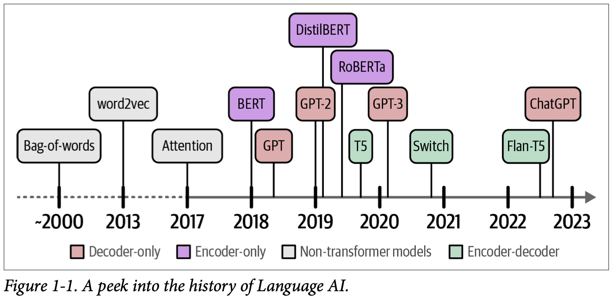
How to read this figure. Time runs left to right (~2000 to 2023; dotted before 2017 because the early years are squeezed). Box colour tells you the architecture type: grey = non-transformer models (Bag-of-words ~2000, word2vec 2013, Attention 2017 marker), purple = encoder-only (BERT 2018, DistilBERT and RoBERTa 2019), pink/red = decoder-only (GPT 2018, GPT-2 2019, GPT-3 2020, ChatGPT late 2022), green = encoder-decoder (T5 2019, Switch 2021, Flan-T5 2022). The point: after 2017 nearly everything is a Transformer of one of three shapes.
| Year (as drawn) | Model | Family | Covered on this page |
|---|
Years are read off Figure 1-1. DistilBERT, RoBERTa, T5, Switch and Flan-T5 appear only in the figure; the chapter's text doesn't discuss them.
Why so much effort on representation? Because language is tricky for computers. Text is unstructured, and it loses its meaning when stored as zeros and ones (individual characters). So a big theme in the history is representing language in a structured way that computers can use. Figure 1-2 shows the kind of tasks this enables.
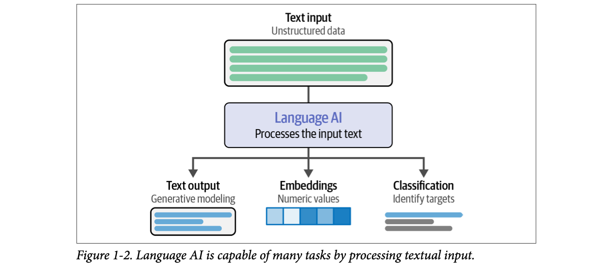
How to read this figure. One input at the top: text, which is unstructured data. The Language AI box "processes the input text". Three arrows come out, the three task types that recur across the book: text output (generative modelling, writing new text), embeddings (numeric values, a row of coloured cells = a vector), and classification (identify targets, e.g. one highlighted label among several).
A kirana shopkeeper reading a scribbled order note. He can (1) write back a reply ("atta out of stock, sending tomorrow") = text output, (2) file it in a mental "kind of customer" bucket by meaning = embedding, or (3) tag it "urgent" or "regular" = classification. Where it breaks: the shopkeeper understands the note directly; a computer first has to turn the scribble into numbers, and how well it does that is the whole history below.
Characters as bytes (ASCII/UTF-8 codes) are numbers, but they carry no meaning: the codes for "cat" and "kitten" have nothing in common. Every method on this page is a better answer to "what numbers should stand for this text?"
"Why is turning text into numbers the core problem?" Models only do arithmetic, so every language system starts with a representation: counts (bag-of-words), static embeddings (word2vec) or contextual embeddings (Transformers). How good that representation is decides what the system can do, from keyword search to RAG to generation.
The history starts with bag-of-words, a method for turning unstructured text into numbers. It was first mentioned around the 1950s but became popular around the 2000s (footnote: Sebastiani, 2002).
Take two sentences we want numbers for. Step 1 is tokenization: splitting each sentence into individual words or subwords, called tokens.
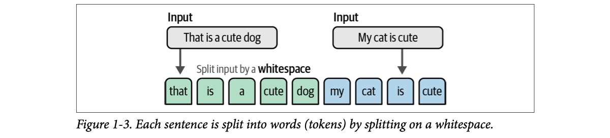
How to read this figure. Sentence 1, "That is a cute dog", becomes green tokens that · is · a · cute · dog; sentence 2, "My cat is cute", becomes blue tokens my · cat · is · cute. The rule is simply "cut wherever there is a space". Notice the tokens are lowercased.
Splitting on whitespace is the most common method, but it has drawbacks: some languages, like Mandarin, don't put spaces around words. Chapter 2 goes deep into tokenization and how it affects language models.
Step 2: build a vocabulary. Combine all unique words from both sentences.
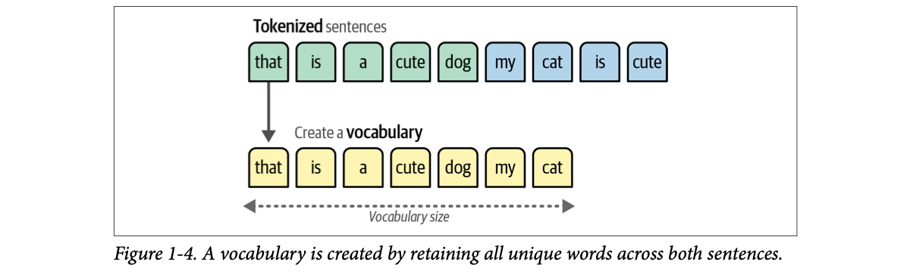
How to read this figure. Top: the 9 tokens of both sentences. Bottom (yellow): the vocabulary, 7 unique words that, is, a, cute, dog, my, cat. "is" and "cute" appear in both sentences but are kept once. The dashed arrow marks the vocabulary size (7), which will be the length of every vector.
Step 3: count. For each sentence, count how often each vocabulary word appears, "quite literally creating a bag of words". The result is a list of numbers, called a vector or vector representation. The book calls models that produce such representations representation models.
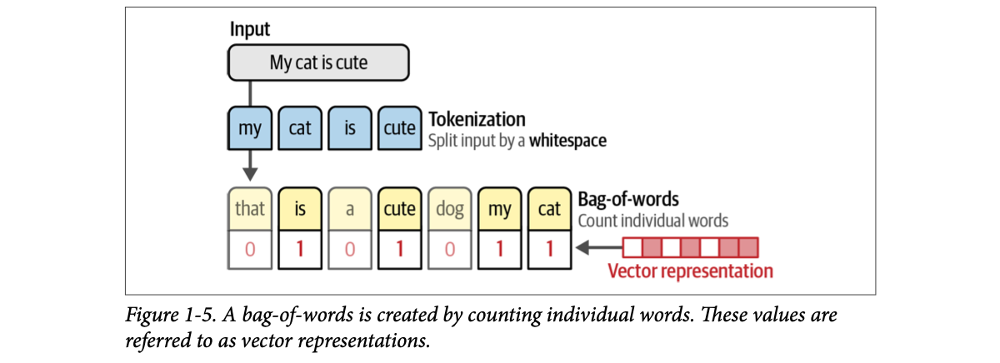
How to read this figure. "My cat is cute" is tokenized, then lined up against the 7-word vocabulary. Words present get a 1 (bold), absent words a 0 (faded): [that 0, is 1, a 0, cute 1, dog 0, my 1, cat 1]. That row of numbers is the sentence's vector representation, drawn on the right as a strip of red cells.
Bag-of-words is old, but it is not obsolete. Chapter 5 shows how it can still complement modern language models (there it helps describe the topics found by clustering embeddings).
Type sentences (one per line). The toy lowercases, strips punctuation, splits on spaces, builds the vocabulary, and counts.
The "overlap" number is cosine similarity between count vectors (explained in plate 5). It only sees shared words: "dog" and "puppy" count as unrelated.
"Dog bites man" and "Man bites dog" give the same bag-of-words vector [dog 1, bites 1, man 1], so bag-of-words cannot tell them apart. And "I love this phone" vs "I adore this mobile" share only i, this, so they look 50% different even though they mean the same. Type them into the toy above to see both effects.
Tipping a sabzi bag out on the counter and counting: 3 tomatoes, 2 onions, 1 bunch of coriander. You know what's in the bag but not the recipe, and not whether the tomatoes were for chutney or curry. Where it breaks: vegetables don't change meaning with order; words do ("not good" vs "good, not bad").
Each vocabulary word gets its own fixed slot in the vector. With a real vocabulary of tens of thousands of words, each sentence vector is huge and mostly zeros (sparse). Two sentences only look similar if they literally use the same words. That's the flaw the next plate fixes.
"When would you still use bag-of-words / keyword search?" When exact terms matter (product codes, names, error IDs), when you need something cheap and explainable, or as half of a hybrid search with embeddings. BM25 (a weighted keyword score, beyond this chapter) is the production descendant of this idea and is often combined with vector search in RAG.
Bag-of-words is elegant but has a flaw: it treats language as "an almost literal bag of words" and ignores the semantic nature (the meaning) of text.
word2vec, released in 2013 (Mikolov et al.), was one of the first successful attempts at capturing the meaning of text in embeddings. Embeddings are vector representations of data that try to capture its meaning. word2vec learns them by training on vast amounts of text, like the entirety of Wikipedia.
To do this, word2vec uses neural networks: interconnected layers of nodes that process information. Networks can have many layers, and each connection has a weight that depends on the input. These weights are called the model's parameters.
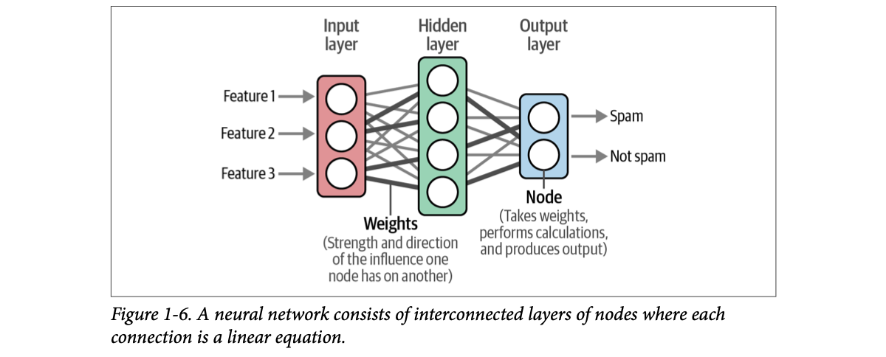
How to read this figure. Left to right: an input layer (red, 3 nodes taking Feature 1–3), a hidden layer (green, 4 nodes) and an output layer (blue, 2 nodes: "Spam" / "Not spam"). Every line is a weight: "strength and direction of the influence one node has on another" (thicker = stronger). Each node "takes weights, performs calculations, and produces output". The caption says each connection is a linear equation (input × weight, summed).
Using such a network, word2vec makes word embeddings by looking at which words tend to appear next to each other. The procedure:
Through this, word2vec learns relationships between words and "distills" them into the embeddings. Chapter 2 looks closer at the training procedure.
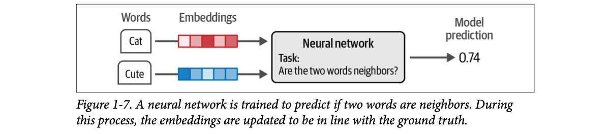
How to read this figure. Two words, "Cat" and "Cute", are looked up to get their embeddings (red and blue strips). Both go into the network with the task "Are the two words neighbors?". It outputs 0.74, a probability-like score. During training this score is compared with the ground truth (1 if they really were neighbors, 0 if not), and the embeddings are adjusted to make the next prediction closer.
Watch two 2-number embeddings get nudged by the neighbor game. Values and learning rate are modelled; real word2vec uses ~50–300 numbers and millions of steps.
What does "capture meaning" mean? The book oversimplifies on purpose. Imagine embeddings for "apple" and "baby". Embeddings represent the properties of words: "baby" might score high on "newborn" and "human", while "apple" scores low on those. An embedding has many properties, and since its size is fixed, the properties are chosen to make a good "mental representation" of the word.
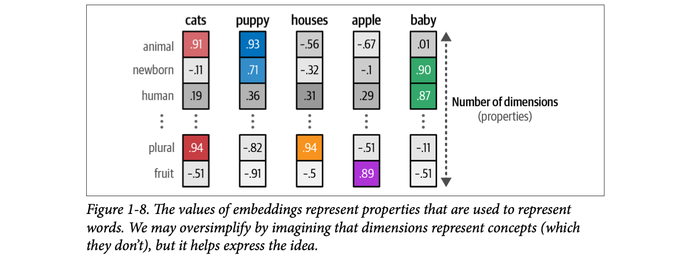
How to read this figure. Each column is a word's embedding; each row is a dimension, labelled with an imagined property. High values are coloured: cats high on animal (.91) and plural (.94); puppy high on animal (.93) and newborn (.71); houses high on plural (.94); apple high on fruit (.89); baby high on newborn (.90) and human (.87). The dots mean many more dimensions exist. The caption's warning matters: real dimensions don't map to concepts like this.
In practice, these properties are usually obscure and rarely match one human concept. But together they make sense to a computer and are a good way to translate human language into computer language.
Embeddings are hugely useful because they let us measure the semantic similarity between two words. With various distance metrics we can judge how close two words are. If we compress the embeddings into 2 dimensions, words with similar meaning end up close together (Chapter 5 shows how to compress embeddings).
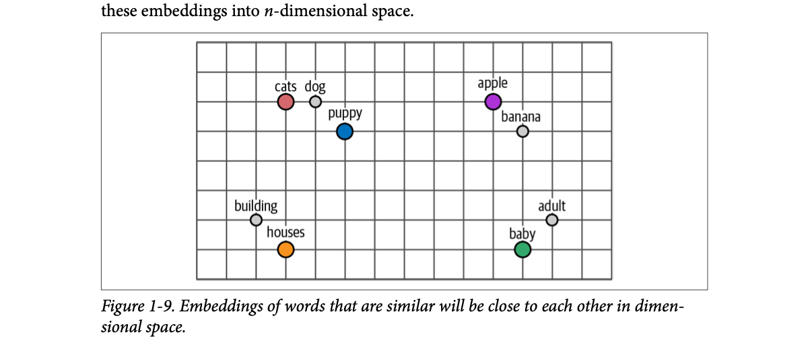
How to read this figure. Each dot is a word placed by its (compressed) embedding. Four neighbourhoods form: animals (cats, dog, puppy) top left, fruit (apple, banana) top right, buildings (building, houses) bottom left, people (adult, baby) bottom right. Coloured dots are the five words from Figure 1-8; grey dots are extra words added to show the clusters. The axes have no names: only distance matters.
Uses only the five property values printed in Figure 1-8 (illustrative numbers from the book, not real word2vec output). Pick two words to compare with cosine similarity (1 = same direction, 0 = unrelated, −1 = opposite).
Cosine = (A·B) / (|A|·|B|). Euclidean distance is the other common metric. The book says "various distance metrics" without naming them; cosine and Euclidean are the usual ones (beyond the book).
Click a word. Its two nearest neighbours light up. Positions copied roughly from Figure 1-9's layout.
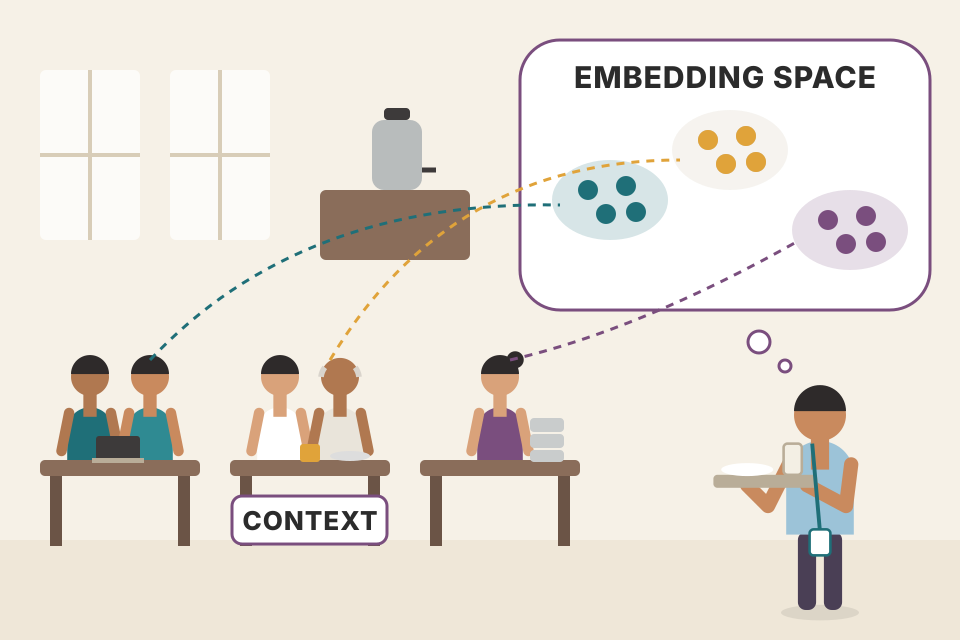
word2vec learns meaning the way you learn who's friends at a new office: you never ask, you just notice who keeps sitting together in the canteen. People with the same lunch group end up "close" in your head. Where it breaks: you can name why two colleagues are friends (same team); embedding dimensions usually have no nameable meaning.
Bag-of-words vectors are sparse (one slot per word, mostly zeros). Embeddings are dense: a short list (e.g. 50) of real numbers where every slot is used. The "neighbor" game forces words used in similar contexts to have similar vectors, because the same weights must say "yes, likely neighbor" for both. This idea, "you know a word by the company it keeps", is called the distributional hypothesis (name beyond the book).
"What's an embedding and how do you compare two?" An embedding is a dense vector that places items so that similar meaning means nearby vectors. You compare with cosine similarity (direction) or Euclidean/dot product. In RAG memory, you embed each stored chunk once, embed the query at request time, and fetch the nearest chunks from a vector database.
There are many types of embeddings, like word embeddings and sentence embeddings. They differ by level of abstraction: one vector per word, or one vector per whole sentence.
Two examples from what we've seen: bag-of-words creates embeddings at the document level, because one vector represents the whole document. word2vec creates embeddings for words only.
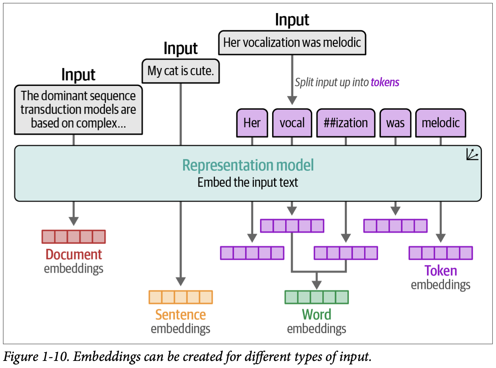
How to read this figure. One teal box, the representation model ("embed the input text"; note the small vector icon, the book's sign for representation models). Three inputs: a long passage ("The dominant sequence transduction models are based on complex…") → one red document embedding; "My cat is cute." → one orange sentence embedding; "Her vocalization was melodic" is first split into tokens Her · vocal · ##ization · was · melodic → one purple token embedding each. The tokens "vocal" and "##ization" (the ## means "continues the previous word") are combined into one green word embedding for "vocalization".
Mapping is our own teaching aid, built from the chapter's levels and the chapters it points to.
Embeddings play a central role through the book: classification (Chapter 4), clustering (Chapter 5), and semantic search and retrieval-augmented generation (Chapter 8). Chapter 2 is the first deep dive into token embeddings.
Describing a cricket match at different zoom levels: a rating for each ball (token), for each over (word), for each innings (sentence), or one line for the whole match report (document). Where it breaks: overs are fixed six balls; how tokens group into words depends on the tokenizer.
A representation model actually produces one vector per token. Bigger units are made by combining token vectors (for example averaging them, called pooling, beyond this chapter), or by reading a special summary token like BERT's [CLS] (plate 9).
"How big should RAG chunks be?" It's a choice of embedding level. A whole-document embedding blurs many topics into one vector; a sentence embedding is precise but loses surrounding context. Most systems embed paragraph-sized chunks and tune the size with retrieval tests.
word2vec's training gives static, downloadable word vectors. The word "bank" always gets the same embedding, whatever the context. But "bank" can be a financial bank or the bank of a river. Its meaning, and so its embedding, should change with context.
A step towards encoding context came from recurrent neural networks (RNNs): variants of neural networks that can model sequences as an additional input. RNNs were used for two tasks:
The book's running example is translating the English "I love llamas" into the Dutch "Ik hou van lama's".
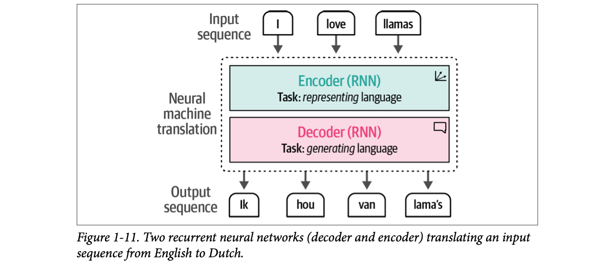
How to read this figure. The dotted box is the whole neural machine translation system. The teal Encoder (RNN)'s task is representing language (vector icon); the pink Decoder (RNN)'s task is generating language (chat icon). Three English tokens go in at the top; four Dutch tokens come out at the bottom. Input and output lengths can differ.
Each step of this architecture is autoregressive: to generate the next word, it must consume all previously generated words.
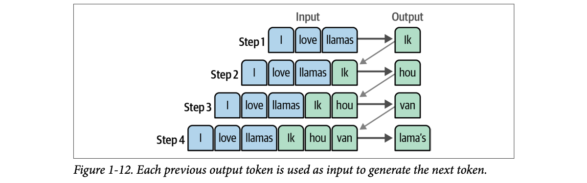
How to read this figure. Each row is one generation step. Blue = the original input, green = tokens the model already generated. The grey arrow from each output back to the next row's input shows the output being fed back in. By step 4 the input is "I love llamas Ik hou van" and the output is "lama's".
The encoding step tries to represent the input as well as possible, producing the context as an embedding, which is the decoder's input. To make it, the encoder takes word embeddings as input, so we can use word2vec for the starting representations. Note that inputs and outputs are processed sequentially, one at a time.
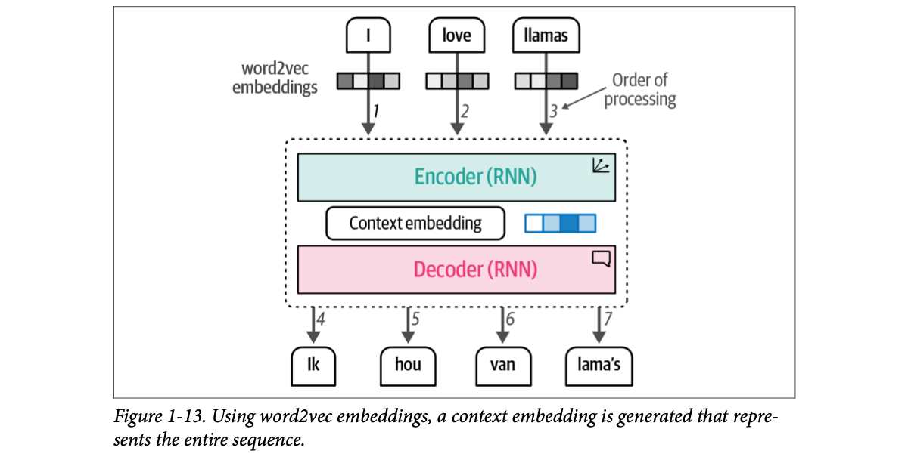
How to read this figure. Follow the small numbers, the order of processing: 1, 2, 3 are the three word2vec embeddings entering the encoder one by one; everything is squeezed into one context embedding (the blue strip in the middle); then 4, 5, 6, 7 are the Dutch words coming out one by one. Seven strictly sequential steps.
The problem: this single context embedding makes longer sentences hard, because it is just one embedding standing for the whole input. In 2014, a solution called attention (Bahdanau, Cho & Bengio) greatly improved the architecture.
Attention lets a model focus on the parts of the input that are relevant to one another ("attend" to each other) and amplify their signal. It selectively decides which words matter most in a given sentence. Example: the output "lama's" is Dutch for "llamas", so attention between them is high; "lama's" and "I" are less related, so attention is lower. Chapter 3 goes deeper.
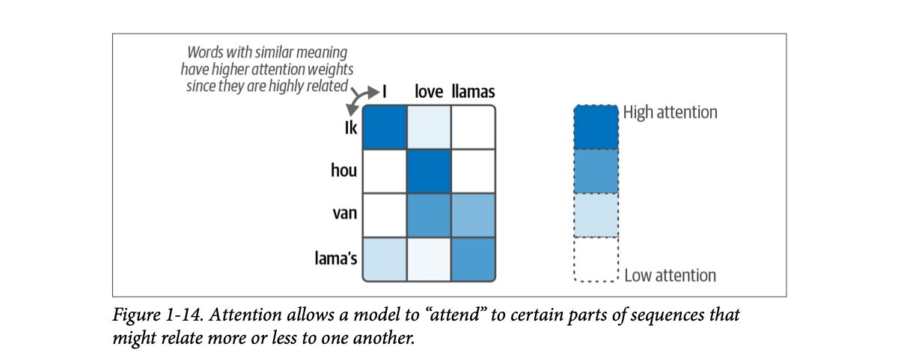
How to read this figure. Rows = Dutch output words, columns = English input words. Darker blue = higher attention (legend on the right, from high to low). The annotation says "words with similar meaning have higher attention weights since they are highly related": Ik↔I is dark, hou↔love is dark, lama's↔llamas is fairly dark. "van" (part of "hou van" = "love") spreads between love and llamas.
By adding attention to the decoder, the RNN can produce signals for each input word related to the potential output. Instead of passing only one context embedding to the decoder, the hidden states of all input words are passed.
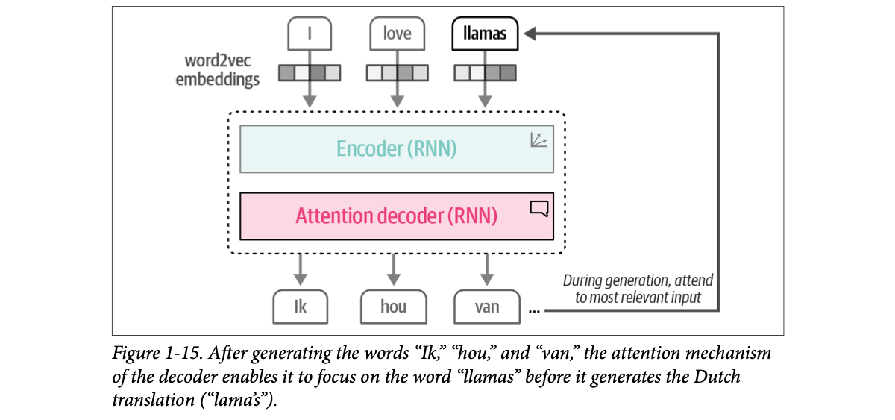
How to read this figure. The decoder is now an Attention decoder (RNN). It has produced "Ik hou van …". The long arrow from the outputs back to the top shows that, "during generation", it attends to the most relevant input, here "llamas" (drawn bold), before writing "lama's". The encoder box is faded: the key change is in the decoder.
Each row is one output word; its weights over the input words add up to 1 (as attention weights do after softmax). Click a cell to read it. Weights are modelled to match Figure 1-14's shading.
So while generating "Ik hou van lama's", the RNN keeps track of which words it mostly attends to. Compared with word2vec, this can represent the sequential nature of text and the context it appears in, by "attending" to the whole sentence. But that sequential nature prevents parallelization during training: step 5 can't start until step 4 finishes.
Before attention: a railway announcer hears a long message once, has to remember it all in one breath, then repeat it in Hindi. Long messages get garbled. With attention: he keeps the written note in front of him and glances at the relevant line while saying each Hindi phrase. Where it breaks: he still has to read the note line by line (sequential), which is why the Transformer came next.
An RNN carries a hidden state: a vector updated after each word, like a running summary. Without attention, the decoder only gets the last hidden state, so early words fade. With attention, the decoder keeps all hidden states and, at each output step, computes a weighted mix of them, with weights saying how relevant each input word is right now.
"Why did Transformers replace RNNs?" RNNs process tokens one after another, so training can't be parallelised across the sequence and long-range information has to survive many steps. Attention lets any position look directly at any other. The Transformer keeps only attention, so all positions are computed at once on a GPU.
The real power of attention, and what drives LLMs' abilities, was first explored in the famous "Attention is all you need" paper (2017, Vaswani et al.). It proposed the Transformer: an architecture based solely on attention, with the recurrent network removed. Unlike an RNN, the Transformer can be trained in parallel, which sped training up tremendously.
In the Transformer, encoder and decoder blocks are stacked. It is still autoregressive: it must consume each generated word before creating the next.
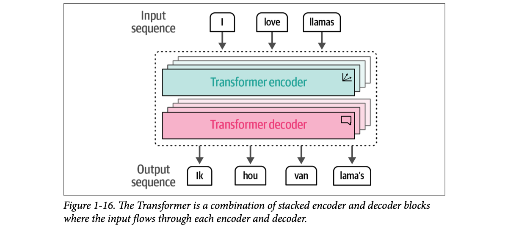
How to read this figure. Same translation as before, but the boxes are now Transformer encoder (teal) and Transformer decoder (pink), each drawn as a stack of several layered cards. Input flows through every encoder, then every decoder.
Both blocks now revolve around attention instead of being an RNN with attention bolted on. The encoder block has two parts: self-attention and a feedforward neural network.
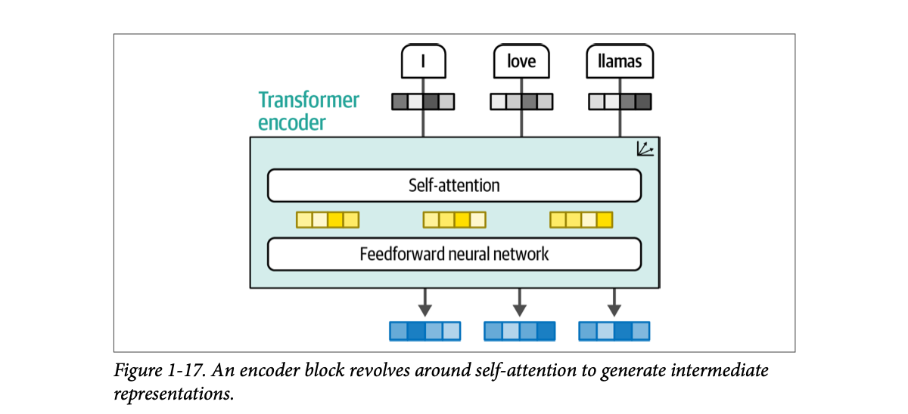
How to read this figure. Grey input embeddings (one per word) enter the block. Self-attention mixes information across words and gives yellow intermediate representations. The feedforward neural network then processes each one, giving blue output vectors, one per input word. Three in, three out.
Compared with earlier attention, self-attention can attend to different positions within a single sequence, so it represents the input more easily and accurately. Instead of one token at a time, it looks at the entire sequence in one go.
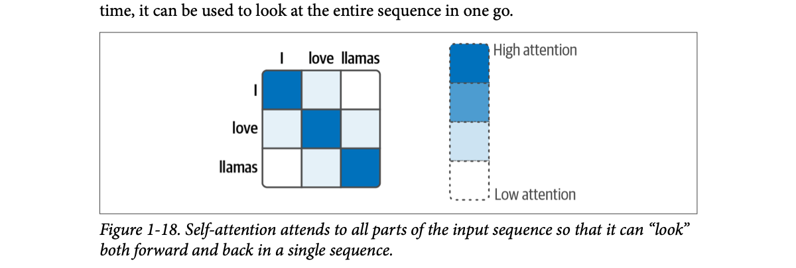
How to read this figure. Unlike Figure 1-14 (Dutch vs English), both axes are the same sentence: "I love llamas" attending to itself. Every cell may be filled, so "I" can look forward to "llamas" and "llamas" can look back to "I". Here each word attends most to itself (dark diagonal) and some to its neighbours.
The decoder has one extra layer compared with the encoder: it pays attention to the output of the encoder, to find the relevant parts of the input. This is like the RNN attention decoder from plate 7.
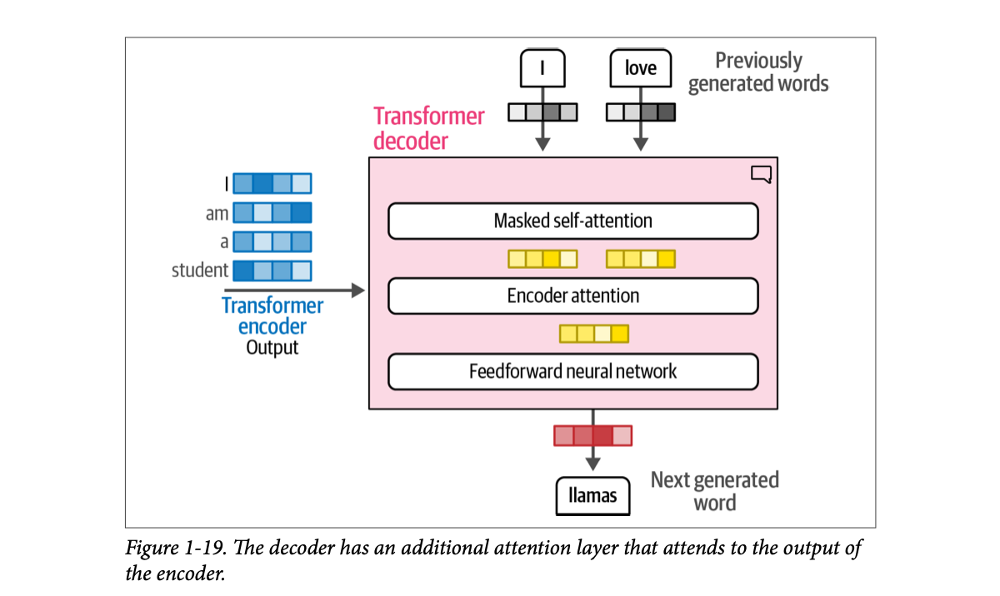
How to read this figure. Three layers inside the pink decoder: masked self-attention over the previously generated words ("I", "love"), then encoder attention, which also receives the encoder's output vectors from the left, then a feedforward neural network, which outputs the next word, "llamas". (Small mismatch in the book: the encoder output on the left is labelled "I am a student", a different example sentence; the mechanism is the point, not the words.)
The decoder's self-attention masks future positions: it only attends to earlier positions. This prevents leaking information when generating output (during training the model sees the whole target sentence, so without a mask it could just "peek" at the next word).
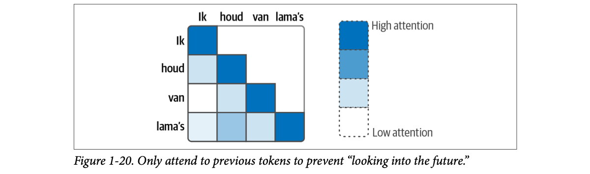
How to read this figure. Rows are the word doing the attending, columns the word attended to. Everything above the diagonal is blank: "Ik" can see only itself; "lama's" can see all four. That lower-triangle shape is the causal mask. (The figure spells the second word "houd"; the text uses "hou".)
Weights are modelled. Striped cells are blocked by the mask (set to zero before normalising).
Together these blocks form the Transformer architecture, the foundation of many important models such as BERT and GPT-1. Most models in the book are Transformer-based. There is much more to it than this: Chapters 2 and 3 explain multi-head attention, positional embeddings and layer normalization.
| RNN + attention (2014) | Transformer (2017) | |
|---|---|---|
| Core | recurrence, attention added in decoder | attention only, no recurrence |
| Input processing | one token at a time | whole sequence at once (self-attention) |
| Training | sequential, can't parallelise | parallel, much faster |
| Generation | autoregressive | still autoregressive |
| Decoder layers | RNN + attention over encoder states | masked self-attention → encoder attention → feedforward |
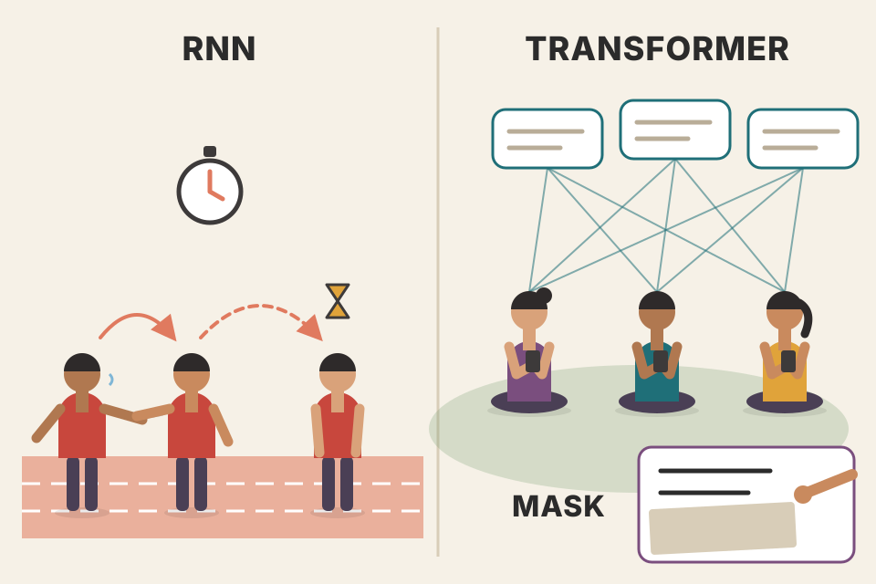
An RNN is a relay race: the baton (hidden state) must pass from runner to runner. A Transformer is a WhatsApp group: every word posts at once and every word reads everyone else's message. The decoder's mask is a quiz where you may read earlier answers but the later ones are covered with a sheet. Where it breaks: when generating, the Transformer still writes one word at a time; the parallelism is in training and in reading the prompt.
Training is parallel because, with the mask, one forward pass computes the prediction for every position of a known target sentence at the same time: position 3 just can't see positions 4+. At inference there is no known target, so each new token still needs a pass (that cost is what a KV cache later reduces, Ch.3).
"What's the causal mask and why is it needed?" In a decoder, each position may only attend to itself and earlier positions. In training we feed the whole target sequence at once for speed; the mask stops a position from seeing the answer it is supposed to predict. Without it the model learns to copy and fails at generation time.
The original Transformer is an encoder-decoder. It suits translation, but can't easily be used for other tasks such as text classification.
In 2018, BERT (Bidirectional Encoder Representations from Transformers, Devlin et al.) was introduced. It could be used for many tasks and became the foundation of Language AI for years. BERT is encoder-only: it focuses on representing language, keeps only the encoder and removes the decoder entirely.
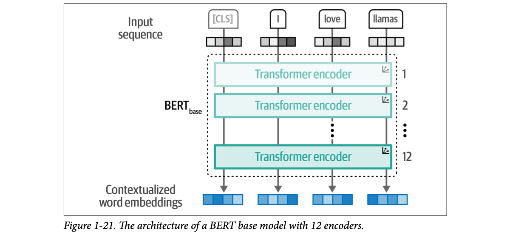
How to read this figure. The input is "[CLS] I love llamas": an extra [CLS] token is put in front. Every token passes through 12 stacked Transformer encoders (1, 2, …, 12; this size is "BERTbase"). The output is one contextualized word embedding per token: unlike word2vec, each vector now depends on the surrounding words.
The encoder blocks are the same as before: self-attention followed by feedforward networks. The input has an extra token, [CLS] (the classification token), used as the representation of the entire input. We often use the [CLS] embedding as the input when fine-tuning the model for tasks like classification.
Training these encoder stacks is hard. BERT's trick is masked language modeling (Chapters 2 and 11): mask part of the input and have the model predict it. The task is difficult, which is exactly why it makes BERT learn more accurate (intermediate) representations.
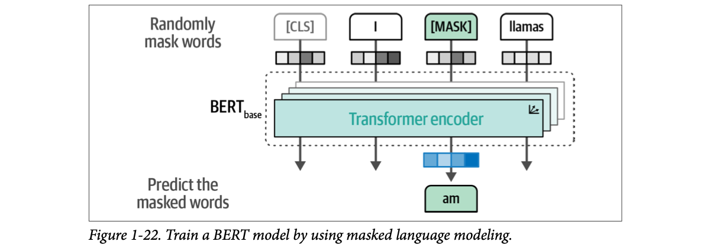
How to read this figure. Step one, "randomly mask words": one input is replaced by [MASK] (green). The stack of encoders produces an output vector at every position, but only the masked one is used for the loss: "predict the masked words". Here the model predicts "am". Because attention looks both left and right (bidirectional), it uses "I" and "llamas" together to guess.
Click a word to mask it, then see what a model would need to use. The candidate list and scores are modelled for teaching, not BERT output.
This architecture plus this training makes BERT-like models excellent at representing contextual language. They are commonly used for transfer learning: first pretrain for language modelling, then fine-tune for a specific task. Example: train BERT on all of Wikipedia so it learns the semantic and contextual nature of text, then fine-tune that pretrained model for, say, text classification.
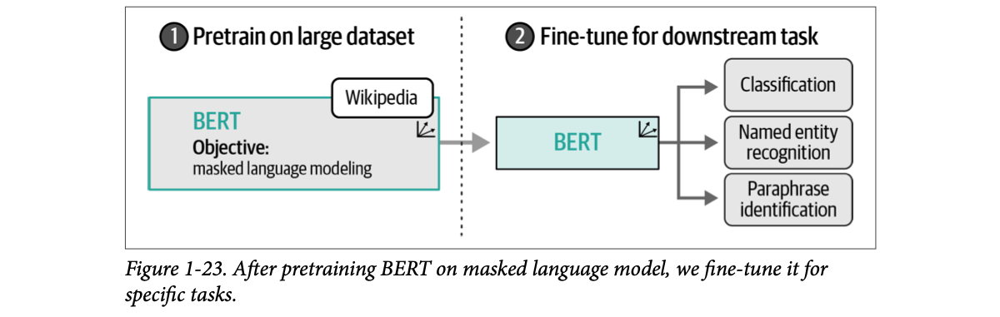
How to read this figure. Left of the dotted line, ① pretrain on a large dataset: BERT + Wikipedia, objective = masked language modeling. Right, ② fine-tune for a downstream task: the same BERT branches into classification, named entity recognition (finding names of people, places…), or paraphrase identification (do two sentences mean the same?). One expensive pretraining, many cheap fine-tunes.
Benefits of pretrained models:
Encoder-only models are used throughout the book for classification (Ch.4), clustering (Ch.5) and semantic search (Ch.8).
Naming convention used for the rest of the book. Encoder-only models = representation models; decoder-only models = generative models. The authors stress the distinction isn't really about architecture details but about what the model is for: representation models mainly represent language (e.g. make embeddings) and typically don't generate text; generative models mainly generate text and typically aren't trained to make embeddings.
You can already see this in Figures 1-10, 1-11, 1-13, 1-16: encoders are teal with the vector icon, decoders pink with the chat icon.
Masked language modelling is the fill-in-the-blanks exercise from school English: "I ___ a student". You can only get it right by reading both sides of the blank. A student who does a million of these understands grammar and meaning; then a short coaching course (fine-tuning) turns them into, say, a proofreader. Where it breaks: the student is never asked to write an essay, and neither is BERT: it's great at understanding, not at generating.
"Bidirectional" is the key word. An encoder has no causal mask, so every token's vector is built from words on both sides. That's ideal for understanding, but it means BERT can't generate left-to-right: when writing, you don't have the right side yet. The [CLS] token has no meaning of its own, so during training its vector learns to collect a summary of the whole input.
"BERT or GPT for classifying support tickets?" For a fixed set of labels and high volume, a fine-tuned encoder (BERT-like) is cheap, fast and accurate: take the [CLS] or pooled embedding and put a classifier on top. A generative LLM is easier to start with (just prompt it) and handles changing labels, but costs more per call. Many production systems use a small encoder for routing/intent and an LLM only where generation is needed.
Also in 2018, a decoder-only architecture was proposed for generative tasks (Radford et al.). It was called Generative Pre-trained Transformer (GPT), now known as GPT-1 to tell it apart from later versions. It stacks decoder blocks, mirroring how BERT stacks encoders.
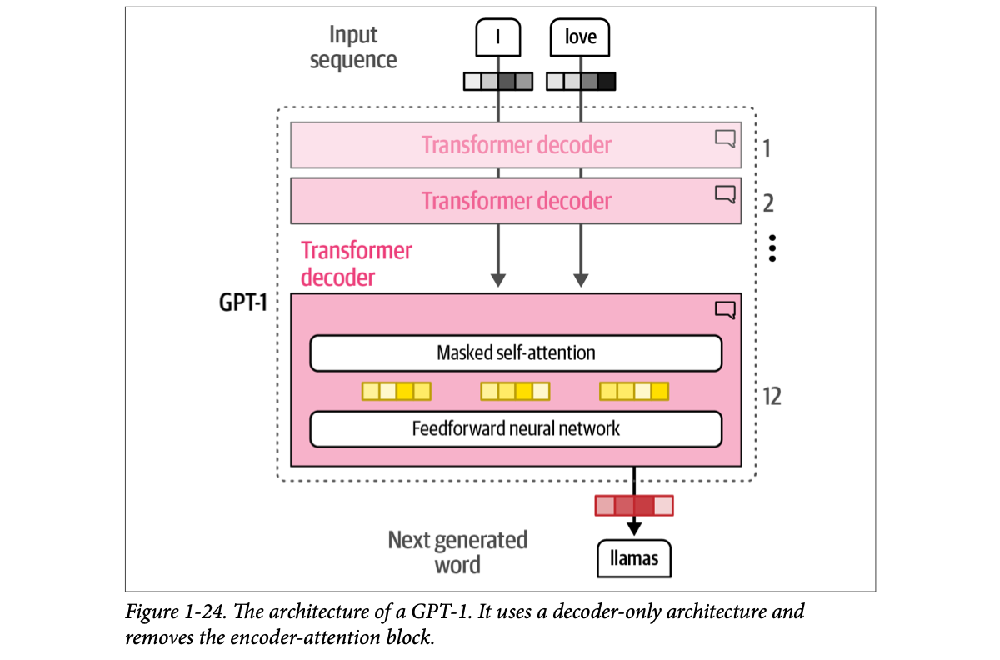
How to read this figure. Input "I love" enters a stack of 12 Transformer decoders. One decoder is opened up: only masked self-attention → feedforward neural network. The middle "encoder attention" layer from Figure 1-19 is gone, because there is no encoder to attend to. The output (red vector) becomes the next generated word, "llamas".
GPT-1 was trained on a corpus of 7,000 books and Common Crawl (a large dataset of web pages). It had 117 million parameters. Each parameter is a number that represents part of the model's understanding of language.
All else being equal, we expect more parameters to greatly improve capability and performance. So bigger and bigger models came out: GPT-2 had 1.5 billion parameters and GPT-3 175 billion.
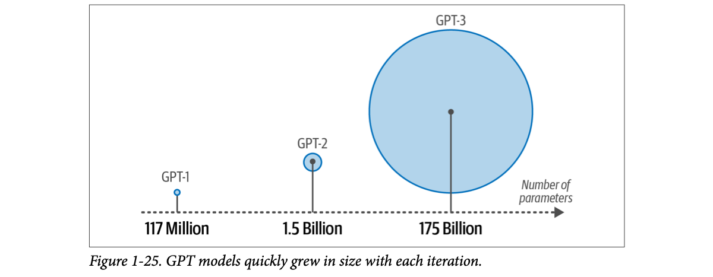
How to read this figure. Circle area is proportional to parameter count. GPT-1 (117 million) is a dot; GPT-2 (1.5 billion) is a small circle; GPT-3 (175 billion) dwarfs both. The axis is "number of parameters". The jump from GPT-2 to GPT-3 is over 100×.
Parameter counts are the book's. Memory = parameters × bytes per parameter, for the weights only (no context, no activations): a modelled lower bound, not the book's number. 16 GB = the free Colab T4 (plate 16).
These generative decoder-only models, especially the larger ones, are commonly called large language models (LLMs). As discussed later (plate 12), the book uses "LLM" for representation models (encoder-only) too.
Generative LLMs, as sequence-to-sequence machines, take in text and try to autocomplete it. Handy, but their real power came from being trained as a chatbot. Instead of completing text, what if they could answer questions? By fine-tuning them we get instruct or chat models that can follow directions.
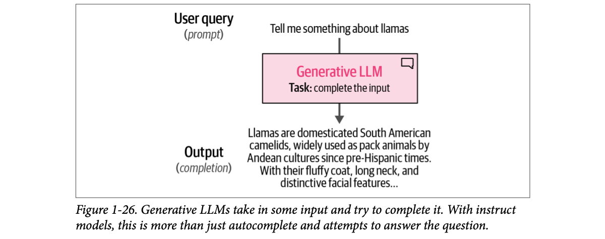
How to read this figure. Top: the user query, called the prompt ("Tell me something about llamas"). Middle: a pink generative LLM, "task: complete the input". Bottom: the output, called the completion: a factual paragraph on llamas. That's why generative models are often called completion models: even "answering" is completing the text most likely to follow the prompt.
Outputs written by us to show the behaviour difference the book describes; not real model output.
A vital part of completion models is the context length or context window: the maximum number of tokens the model can process. A large context window lets you pass whole documents to the LLM. And because generation is autoregressive, the current context length grows as new tokens are generated.
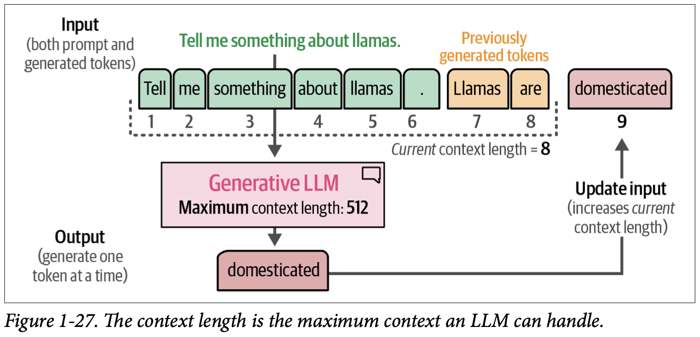
How to read this figure. Green tokens 1–6 are the prompt; orange tokens 7–8 ("Llamas", "are") were already generated. So the current context length = 8. The model's maximum context length is 512. It generates one token at a time ("domesticated"), which is appended as token 9 ("update input, increases current context length"). When the count reaches the maximum, the model can't take more.
Tokens are whole words here for readability; real tokenizers split into subwords (Ch.2). Continuation text is modelled.
A generative LLM is the friend who finishes your sentences, trained on a library of books. Base model: you say "Recipe for chai:" and he continues with "Recipe for coffee: Recipe for lassi:" because that's what lists look like. Instruct model: he's been coached to treat it as a request and gives you the recipe. The context window is the size of his notepad: once it's full, the oldest lines can't fit. Where it breaks: a friend remembers last week; the model only "remembers" what's in the window right now.
Every token generated is a full pass through all the decoder layers, and its output becomes part of the next input. So the prompt and the answer share one budget: a 4k-token model given a 3,900-token prompt can write only about 100 tokens. Instruct models aren't a new architecture: they're the same base model fine-tuned on examples of instructions and good answers (Ch.12).
"What happens if a conversation exceeds the context window?" The API errors or the oldest tokens must be dropped. Production chat and voice agents manage this: keep the system prompt, summarise or drop old turns, and pull back relevant memory via retrieval. Also remember the output tokens count against the same window, so leave room for the reply (max_new_tokens, plate 20).
LLMs had such an impact that some call 2023 "The Year of Generative AI", because of the release, adoption and media coverage of ChatGPT (GPT-3.5).
A precise point: "ChatGPT" is the product, not the model. At launch it ran on the GPT-3.5 LLM, and since then it has added more capable variants such as GPT-4.
GPT-3.5 wasn't the only influential model. Open source and proprietary LLMs reached people at an incredible pace. Open source base models are often called foundation models, and they can be fine-tuned for specific tasks like following instructions.
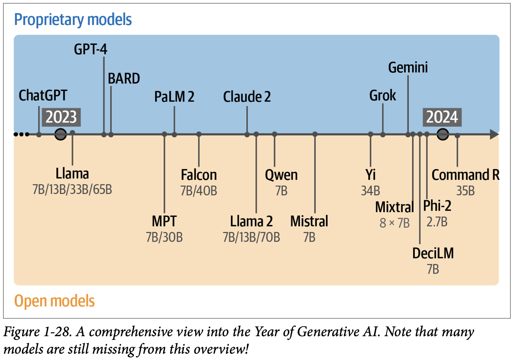
How to read this figure. One timeline from just before 2023 to just after 2024 starts. Blue band above = proprietary models: ChatGPT, GPT-4, BARD, PaLM 2, Claude 2, Grok, Gemini. Orange band below = open models, with sizes in billions of parameters (B): Llama 7B/13B/33B/65B, MPT 7B/30B, Falcon 7B/40B, Llama 2 7B/13B/70B, Qwen 7B, Mistral 7B, Yi 34B, Mixtral 8×7B, DeciLM 7B, Phi-2 2.7B, Command R 35B. Open models come in several sizes so people can pick one that fits their hardware.
| Model (Fig 1-28 order) | Type | Sizes shown |
|---|
The "fits" filter uses our modelled rule: smallest size × 2 bytes ≤ 16 GB (weights only). "8 × 7B" for Mixtral means a mixture of 8 experts of ~7B each (beyond this chapter).
Besides the Transformer, promising new architectures appeared, such as Mamba (Gu & Dao, 2023; the book also points to "A Visual Guide to Mamba and State Space Models") and RWKV (Peng et al., 2023, "Reinventing RNNs for the transformer era"). They try to reach Transformer-level performance with extra advantages such as larger context windows or faster inference.
The authors call 2023 "a truly hectic year for AI": it took everything to keep up. So the book covers more than the latest LLMs: it shows how embedding models, encoder-only models and even bag-of-words can empower LLMs.
2023 was like the first year of smartphones in India: one famous brand (ChatGPT) got everyone's attention, then dozens of brands appeared in every size and price. "ChatGPT vs GPT-4" is like "WhatsApp vs the phone it runs on": the app is the product, the model is the engine. Where it breaks: a phone brand doesn't swap the engine inside the same app; OpenAI did exactly that (GPT-3.5 → GPT-4 inside ChatGPT).
Why do Mamba and RWKV promise bigger contexts or faster inference? Attention compares every token with every other, so cost grows with the square of the sequence length. These architectures keep a fixed-size running state (like an RNN) so cost grows linearly (Mamba's paper title says "linear-time"). Detail beyond this chapter.
Since the book (2024), the list has kept growing: newer Llama, Qwen, Mistral, Gemma, Phi and DeepSeek releases on the open side, and newer GPT, Claude and Gemini generations on the proprietary side. The lesson of the figure still holds: there are always more models than any chart shows.
"Is ChatGPT a model?" No, it's a product. Behind it are models (GPT-3.5 at launch, later GPT-4 and others) plus a system prompt, safety layers, tools and a UI. Same with your own app: the model is a swappable dependency behind an interface, which is why teams put an LLM gateway in front so they can change providers.
So far, "LLM" has mostly meant generative, decoder-only Transformer models, especially ones that are "large". The authors find that too narrow and ask two thought experiments:
The problem with such definitions: they exclude capable models. And the name we give a model doesn't change how it behaves.
Because the meaning of "LLM" shifts with each new release, the authors fix their own definition for the book:
So, besides generative models, the book covers models with fewer than 1 billion parameters that don't generate text, and shows how embedding models, representation models and even bag-of-words can empower LLMs.
"Large" is like "big city". In 1950 a town of 5 lakh was a big city; today it's a tier-3 town. If you define "big city" by population, the word keeps moving. The authors define LLM by what it does with language, not by size. Where it breaks: cities have official definitions; "LLM" has none, so other books (and interviewers) may use the narrow meaning.
Be explicit about which meaning you use. "By LLM I mean a Transformer language model; in our stack that's both a small encoder for embeddings and a generative model for answers." It shows you know embedding models (often under 1B parameters) are part of the same family, and avoids a pointless argument about the word "large".
Traditional machine learning usually trains a model for one specific task, like classification. The book calls this a one-step process.
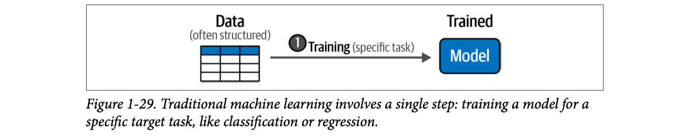
How to read this figure. Left: data, often structured (drawn as a table, e.g. rows of customers with columns). One arrow, ① training (specific task). Right: the trained model. Done. (Regression = predicting a number, e.g. a price; classification = predicting a label.)
Creating LLMs usually takes at least two steps:
Terminology: any model that went through step 1 is a pretrained model, and that includes fine-tuned models.
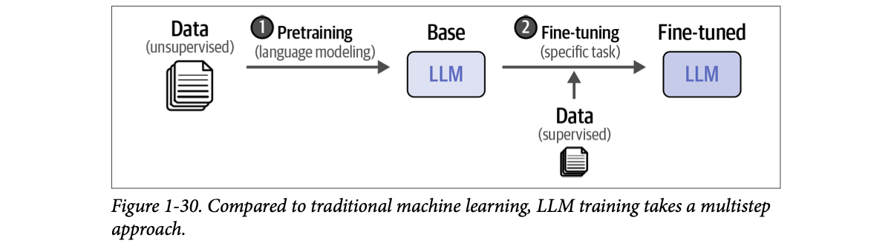
How to read this figure. Compare with Figure 1-29. Left: a pile of documents, unsupervised data (no labels; the next word is its own label). ① Pretraining (language modeling) gives the base LLM. ② Fine-tuning (specific task), fed by a much smaller stack of supervised data (labelled examples), gives the fine-tuned LLM. Note the data sizes: big pile in, small stack in.
More fine-tuning steps can be added to further align the model with the user's preferences (Chapter 12).
How much of the total compute is pretraining vs one fine-tune? Move the slider to change the fine-tuning dataset size.
Pretraining = 2 trillion tokens (the book's Llama 2 number). Compute is modelled as proportional to tokens processed for the same model; real costs depend on many more factors.
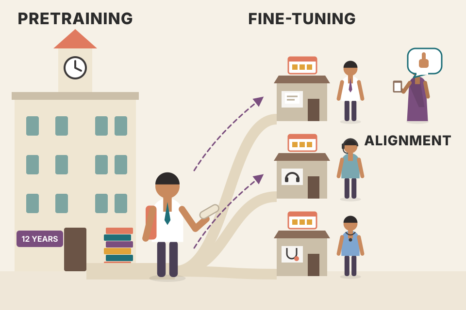
Pretraining is 12 years of school: years of general reading, very expensive, done once. Fine-tuning is a 3-month course to become a bank clerk or a call-centre agent. Many different courses can start from the same school graduate. Alignment is the on-the-job feedback from your manager. Where it breaks: a person can't be copied; a base model can be copied and fine-tuned into a thousand different specialists.
Pretraining is "self-supervised": the labels come free from the text (the next word). That's why it can use internet-scale data with no humans labelling. Fine-tuning needs labelled pairs (input → desired output), which are expensive per example, but you need far fewer because the model already knows language.
"Base vs instruct model, and when would you fine-tune?" A base model only continues text; an instruct model was fine-tuned on instruction→answer pairs (and often preference-aligned). Fine-tune when prompting and retrieval can't get the format, tone or task accuracy you need, and you have good labelled data; otherwise prompt + RAG is cheaper and easier to update.
LLMs suit a wide range of tasks. With text generation and prompting, "it almost seems as if your imagination is the limit". The book gives five common tasks and the techniques behind them:
| Task | What kind of problem | Which models / techniques | Chapter |
|---|---|---|---|
| Detect whether a customer review is positive or negative | (Supervised) classification | Encoder- or decoder-only models, either pretrained as-is or fine-tuned | Ch.4, Ch.11 |
| Find common topics in ticket issues | (Unsupervised) classification: no predefined labels | Encoder-only models do the grouping; decoder-only models label the topics | Ch.5 |
| Retrieve and inspect relevant documents | Adding external information to an LLM system | Semantic search; improve it by creating or fine-tuning a custom embedding model | Ch.8, Ch.12 (as the book says; embedding training is also Ch.10) |
| An LLM chatbot that uses external resources like tools and documents | A combination of techniques: the power is in the extra components | Prompt engineering, retrieval-augmented generation (RAG), fine-tuning: "all pieces of the LLM puzzle" | Ch.6, Ch.8, Ch.12 |
| Write recipes from a picture of what's in your fridge | Multimodal task: the LLM takes an image and reasons about it | LLMs adapted to other modalities such as vision | Ch.9 |
LLM apps are "incredibly satisfying to create" because they are partly limited only by what you can imagine. As models get more accurate, creative uses such as role-playing and writing children's books become more and more fun.
Our own examples, mapped to the book's five categories.
An LLM on its own is a brilliant new employee on day one: articulate, but with no access to your files and no phone. RAG gives them the filing cabinet, tools give them the phone, fine-tuning is the training course, multimodality gives them eyes. Where it breaks: a new employee knows when they don't know; an LLM may confidently guess (plate 15).
"Design a support bot." Name the pieces the book lists: classification to route, semantic search over docs (RAG) for grounded answers, prompt engineering for format and guardrails, tool calls for actions (refunds, tickets), fine-tuning only if needed. Mention evaluation and fallbacks to a human. That's exactly the "LLM puzzle" framing.
Because LLMs are so widely adopted, their impact is large, and it's important to keep their societal and ethical implications in mind. Five key points:
The authors urge readers to learn more about the safe and responsible use of LLMs and AI systems in general.
Which of the book's five points apply is our judgement, for practice.
An LLM is like a very confident chartered accountant fresh out of exams who learned from every ledger on the internet, including the dodgy ones. Useful, but you still want a senior to sign off (human in the loop), you can't see which ledgers shaped their habits (bias, IP), and the government is writing rules for the profession (AI Act). Where it breaks: a CA can be held personally liable; for an LLM, accountability falls on whoever deploys it.
"How do you reduce hallucinations in production?" Ground answers in retrieved sources and ask the model to cite them; constrain outputs (schemas, tool calls); evaluate on a test set; add guardrails and a human hand-off for high-stakes cases; disclose that the user is talking to an AI. Healthcare or finance flows need stricter review because of regulation.
(The title is a play on "Attention Is All You Need".) The compute resources mentioned so far mostly mean the GPU(s) on your system. A powerful GPU (graphics card) makes both training and using LLMs much faster and more efficient.
When choosing a GPU, a key number is VRAM (video random-access memory): the memory available on the GPU. More VRAM is better, because some models simply cannot run at all without enough VRAM.
Training and fine-tuning LLMs is expensive, GPU-wise, so people without a powerful GPU have been called the GPU-poor, which shows the battle for compute to train huge models. Example: to create the Llama 2 family, Meta used A100-80 GB GPUs. Assuming renting one costs $1.50/hour, the total cost would exceed $5,000,000. Footnote: the models were trained for 3,311,616 GPU hours (training time on a GPU multiplied by the number of GPUs).
3,311,616 GPU-hours × $1.50 per GPU-hour = $4,967,424
That's about $5 million. (Strictly, this multiplication lands just under $5,000,000, while the book says "exceed"; the book's point, millions of dollars, is unaffected.) For scale: if Meta had used 2,000 GPUs in parallel, 3,311,616 / 2,000 ≈ 1,656 hours ≈ 69 days (the 2,000 is our assumption).
There is no single rule for how much VRAM a model needs. It depends on the model's architecture and size, the compression technique, the context size, the backend running the model, etc.
This book is for the GPU-poor. It uses models people can run without the most expensive GPUs or a big budget. All code is available in Google Colab instances. At the time of writing, a free Colab instance gives a T4 GPU with 16 GB VRAM, which is the minimum the authors suggest.
Modelled rule of thumb, not from the book: weights = params × bytes; plus a context cost we model as 0.5 MB per 1,000 tokens per billion params at 16-bit, plus 1 GB overhead. Real numbers vary with architecture, backend and settings, which is exactly the book's "no single rule" warning.
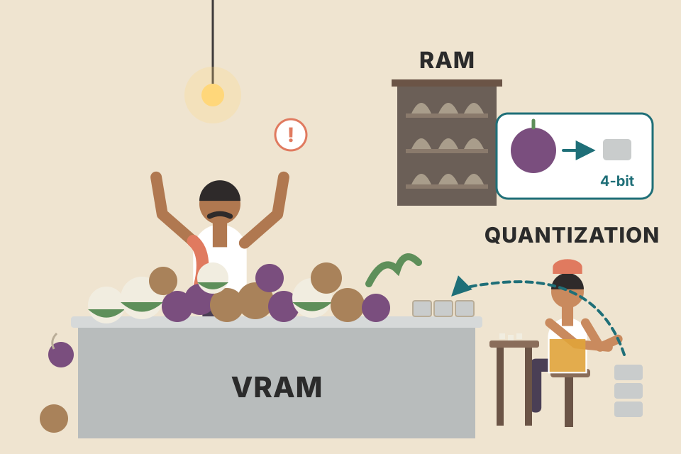
VRAM is the size of the kitchen counter in a dhaba. The model's weights are all the ingredients that must be on the counter at once; if the counter is too small, you can't cook that dish at all, no matter how fast the cook is. Quantization is pre-chopping and packing ingredients smaller so they fit. Where it breaks: squeezing ingredients doesn't change the taste; squeezing weights (quantization) can slightly reduce quality.
During generation, every token needs all weights read from GPU memory, so they must live in VRAM; moving them from normal RAM each time would be far too slow. On top of weights you need room for the context (the attention "memory" of past tokens grows with context length) and the backend's working space. That's why context size and backend appear in the book's list.
"Can we self-host a 7B model on a 16 GB GPU?" Back-of-envelope: 7B × 2 bytes = 14 GB of weights at 16-bit, too tight once you add context and overhead. At 8-bit it's ~7 GB, at 4-bit ~3.5 GB, which fits with room for context and batching. Then check throughput and latency, because realtime voice needs fast first tokens.
Interfacing with LLMs (talking to them from software) matters both for using them and for understanding how they work. There are many techniques, methods and packages for it. The book covers the most common, for both proprietary (closed source) and publicly available open models.
Closed source LLMs are models whose weights and architecture are not shared with the public. Specific organisations develop them and keep the code secret. Examples: OpenAI's GPT-4 and Anthropic's Claude. They usually have significant commercial support and are built into their makers' services.
You access them through an interface that talks to the LLM, an API (application programming interface). Example: to use ChatGPT from Python you use OpenAI's package to talk to the service without accessing the model directly.
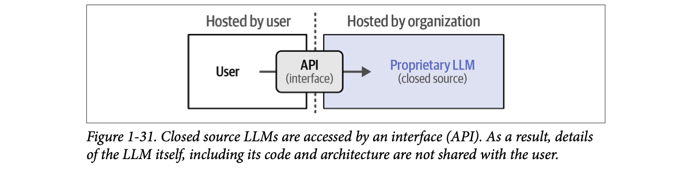
How to read this figure. A dotted line splits two worlds: left, hosted by user (you and your code); right, hosted by organization (the proprietary LLM, shaded). The API box sits right on the boundary: it's the only thing you touch. You never see the model's code, weights or architecture.
All prices modelled for teaching (API at $2 per million tokens; one rented GPU at $1.50/hour = $36/day, the book's hourly rate, assumed to serve up to 50M tokens/day). Real prices differ by model and provider. Self-hosting also costs engineering time, which the book lists as "specific knowledge".
A proprietary LLM is ordering from Swiggy: you get great food without owning a kitchen, but you pay per order, you can't change the recipe, and the restaurant sees your address and order history. Where it breaks: a restaurant doesn't improve your dish overnight; an API model can be updated by the provider, changing behaviour under you.
What crosses the API boundary: your prompt text (and any documents you include) goes to the provider; their servers tokenize it, run it on their GPUs (usually batched with other customers' requests) and send back the generated text. You're billed per token in and out. Nothing of the model comes back to you, which is why you can't fine-tune or inspect it.
"Closed API or open model?" Closed: fastest to start, best quality per effort, no GPUs, but per-token cost, data leaves your network, no weight-level fine-tuning, vendor dependency. Open: control, privacy, fine-tuning, predictable cost at scale, but you run the infra. Many teams start on an API behind a gateway and move high-volume or sensitive paths to self-hosted models.
Open LLMs share their weights and architecture with the public. They're still built by specific organisations, but these often share code for creating or running the model locally, with varying licences that may or may not allow commercial use. Examples: Cohere's Command R, the Mistral models, Microsoft's Phi, and Meta's Llama models.
There are ongoing debates about what truly counts as an open source model. Some publicly shared models come with licences that restrict commercial use. (The book's sentence calls this a "permissive commercial license … cannot be used for commercial purposes", which reads as a slip; the meaning is clearly a restrictive licence.) For many people that isn't truly open source, which should mean no restrictions on use. Also, the training data and the model's source code are seldom shared.
You can download open models and run them on your device, as long as you have a GPU powerful enough.
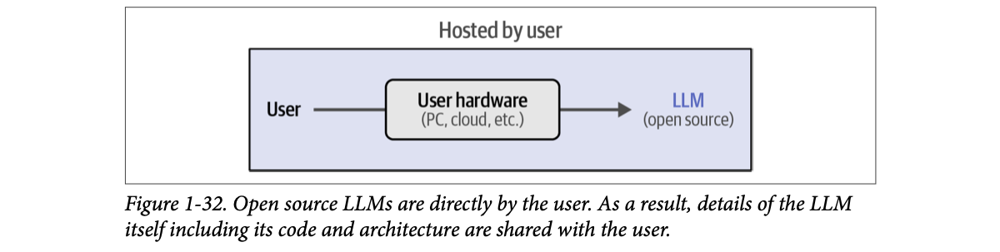
How to read this figure. Compare with Figure 1-31: there is no dotted boundary and no API. One shaded box, hosted by user, contains everything: user → user hardware (a PC, a cloud machine, etc.) → the open LLM. (The caption is missing a word; it means open LLMs are used directly by the user.)
The authors prefer open source models wherever they can: the freedom to experiment, look inside, and run locally "arguably provides more benefits" than proprietary LLMs.
Recommendations built from the book's lists of benefits and downsides.
An open model is buying the recipe and cooking at home. You control the masala, nobody sees your order, and you can tweak it for your family's taste (fine-tune). But you need a kitchen (GPU) and you have to know how to cook (setup knowledge). Where it breaks: "open" recipes sometimes come with fine print, like "not for selling in your restaurant" (licences), and you rarely get the list of where the ingredients came from (training data).
"What does 'open weights' not give you?" Usually not the training data or the full training code, and the licence may restrict commercial use or user counts. Always check the licence before shipping. Phi-3 is under MIT (plate 20), which allows commercial use.
Unlike closed models, open LLMs need packages to run them. In 2023 many packages and frameworks came out, each interacting with LLMs in its own way. Wading through hundreds of them "is not the most enjoyable experience", and your favourite framework might even be missing from the book.
Instead of covering every framework (there are too many, and the number keeps growing), the book aims for a solid foundation. The idea: after reading it, you can easily pick up most other frameworks, because they all work in a very similar way. Having an intuitive understanding of both LLMs and of using them with common frameworks makes branching out straightforward.
Specifically the book focuses on backend packages: packages without a GUI (graphical user interface), built to efficiently load and run any LLM on your device:
The book mostly covers interacting with LLMs through code. But sometimes you just want a ChatGPT-like interface with a local LLM. Examples of frameworks for that: text-generation-webui, KoboldCpp and LM Studio.
Under the hood, every backend package does the same three jobs: load the weights (and tokenizer) into memory on the right device, run the autoregressive generate loop (tokenize → predict next token → append → repeat → detokenize), and expose that as a function or API. They differ in speed tricks (quantized formats, batching, memory management), which is why learning one makes the others easy.
Other widely used runners today include Ollama (a local runner built on llama.cpp) and vLLM / TGI (Text Generation Inference) for high-throughput serving. The book's advice holds: they all load a model plus tokenizer and expose a generate call.
Learning one framework well is like learning to drive a manual Maruti: after that, any car is "the same pedals in a different place". GUI tools like LM Studio are taking an Ola: you get there without touching the controls. Where it breaks: some frameworks really do differ (serving engines care about batching and memory in ways a laptop runner doesn't).
"How would you serve an open model?" For local dev: llama.cpp or a GUI like LM Studio. For an app: Hugging Face Transformers to prototype, then a dedicated inference server for throughput (beyond the book: vLLM, TGI), behind your own API. Frameworks like LangChain sit above that layer for orchestration.
Using a language model starts with choosing one. The main source for finding and downloading LLMs is the Hugging Face Hub. Hugging Face is the organisation behind the famous Transformers package, which for years has driven language-model development. As the name says, it was built on the Transformer architecture from plate 8. At the time of writing the Hub had more than 800,000 models for many purposes: LLMs, computer vision, audio, tabular data. You can find almost any open LLM there.
The main generative model in the book is Phi-3-mini: relatively small (3.8 billion parameters) but quite performant (Abdin et al., 2024). Because it's small it runs on devices with less than 8 GB of VRAM. With quantization (a type of compression, Chapters 7 and 12) it needs even less than 6 GB. It's licensed under the MIT license, which allows commercial use without constraints.
New and better LLMs come out often, so most examples are designed to work with any LLM, and the book's repository highlights other models to try.
When you use an LLM, two models are loaded:
Both are on the Hugging Face site and you only pass their ID: here "microsoft/Phi-3-mini-4k-instruct". The book assumes an NVIDIA GPU (device_map="cuda"), but you can choose another device; without a GPU, use the free Google Colab notebooks in the book's repository.
from transformers import AutoModelForCausalLM, AutoTokenizer
# Load model and tokenizer
model = AutoModelForCausalLM.from_pretrained(
"microsoft/Phi-3-mini-4k-instruct",
device_map="cuda",
torch_dtype="auto",
trust_remote_code=True,
)
tokenizer = AutoTokenizer.from_pretrained("microsoft/Phi-3-mini-4k-instruct")| Piece | What it does |
|---|---|
AutoModelForCausalLM | Loads a causal language model: a decoder-only model that predicts the next token using only earlier tokens (the masked self-attention of plate 8). "Auto" picks the right model class from the model's config. |
"microsoft/Phi-3-mini-4k-instruct" | The Hub ID: organisation / model name. "mini" = 3.8B size, "4k" = 4k-token context window, "instruct" = fine-tuned to follow instructions (plate 10). (Name breakdown is our reading of the ID.) |
device_map="cuda" | Put the model on the NVIDIA GPU. You can choose a different device. |
torch_dtype="auto" | Use the number format (e.g. 16-bit) stored with the model, which sets bytes per parameter and so VRAM use (plate 16). (Explanation beyond the book's text.) |
trust_remote_code=True | Allow running model-specific code shipped in the model's repository. (Explanation beyond the book's text; only enable for sources you trust.) |
AutoTokenizer.from_pretrained(...) | Loads the matching tokenizer. It must be the one the model was trained with (Ch.2). |
Running it starts downloading the model, which can take a couple of minutes depending on your connection.
You could now generate text, but transformers.pipeline simplifies it: it wraps the model, tokenizer and generation process into one function.
from transformers import pipeline
# Create a pipeline
generator = pipeline(
"text-generation",
model=model,
tokenizer=tokenizer,
return_full_text=False,
max_new_tokens=500,
do_sample=False
)Parameters worth knowing:
return_full_text: if False, the prompt is not returned, only the model's output.max_new_tokens: the maximum number of tokens the model will generate. A limit prevents long, unwieldy output, because some models keep generating until they reach their context window.do_sample: whether the model uses a sampling strategy to choose the next token. If False, it always picks the most probable next token (called greedy decoding, term beyond this chapter). Chapter 6 explores sampling parameters that add "creativity".To generate, the prompt is formatted as a list of dictionaries, each one an entity in the conversation. Our role is "user" and the "content" key holds the prompt:
# The prompt (user input / query)
messages = [
{"role": "user", "content": "Create a funny joke about chickens."}
]
# Generate output
output = generator(messages)
print(output[0]["generated_text"])"And that is it!" The first text generated in the book is "a decent joke about chickens".
A pretend model with a fixed next-token table; the <|user|> markers stand in for the chat template the pipeline applies. Change the settings and press Generate. It shows what each parameter changes, not real Phi-3 behaviour.
The tokenizer is the order-taker at a South Indian darshini who converts "two plain dosa, one filter coffee" into slip codes; the model is the kitchen that only understands codes. pipeline is the counter that does order-taking, cooking and serving in one go. do_sample=False is the cook who always makes the house special exactly the same way. Where it breaks: a cook doesn't eat his own output to decide the next step; the model does (each new token is fed back in).
The pipeline (1) applies the model's chat template to turn the messages list into one text string with role markers (term beyond this chapter), (2) tokenizes it, (3) runs the autoregressive loop: predict next token, append, repeat, until an end token or max_new_tokens, (4) decodes tokens back to text, and (5) strips the prompt if return_full_text=False.
"Your LLM endpoint sometimes returns huge, slow responses. Fix?" Set a max output token limit (max_new_tokens / max_tokens), add stop sequences, and stream tokens so the user sees output early. For deterministic tests use greedy decoding (do_sample=False / temperature 0). In a voice agent, short limits also keep text-to-speech latency low.
| Term | Plain meaning |
|---|---|
| Language AI / NLP | The part of AI that understands, processes and generates human language. NLP = natural language processing. |
| Token / tokenization | A piece of text (word or subword); splitting text into such pieces. |
| Vocabulary | The set of unique tokens a method knows. |
| Bag-of-words | Represent text by counting each vocabulary word; ignores order and meaning. |
| Vector / vector representation | A list of numbers that stands for a piece of data. |
| Representation model | A model whose main output is vectors/embeddings (in this book: encoder-only, teal). |
| Embedding | A vector representation that tries to capture meaning; similar meaning → nearby vectors. |
| word2vec | 2013 method that learns word embeddings by predicting whether words are neighbours. |
| Neural network, node, weight, parameter | Layers of connected nodes; each connection has a weight; the weights are the model's parameters. |
| Semantic similarity, distance metric | How close in meaning two items are, measured as a distance between their vectors. |
| RNN | Recurrent neural network: processes a sequence one step at a time. |
| Encoder / decoder | The part that represents the input / the part that generates the output. |
| Autoregressive | Generating one token at a time, feeding each output back in as input. |
| Context embedding | The single vector an RNN encoder passed to its decoder: a bottleneck for long inputs. |
| Attention | Lets the model focus on the parts of a sequence most related to each other (2014). |
| Transformer | 2017 architecture built only on attention; trains in parallel. |
| Self-attention | Attention within one sequence, looking both forward and back. |
| Masked self-attention | Decoder self-attention that only looks at earlier positions. |
| Feedforward neural network | The second sub-layer in each Transformer block, processing each position. |
| BERT, [CLS] | Encoder-only model (2018); [CLS] is the extra token whose vector represents the whole input. |
| Masked language modeling | Training by hiding some input tokens and predicting them. |
| Transfer learning | Pretrain on general data, then fine-tune for a specific task. |
| GPT | Generative Pre-trained Transformer: decoder-only generative model family (GPT-1 2018). |
| Generative model / completion model | A model that generates text by completing its input. |
| Instruct / chat model | A generative model fine-tuned to follow instructions and answer questions. |
| Prompt / completion | The input text / the generated continuation. |
| Context length / window | Maximum number of tokens the model can process (prompt + generated). |
| Foundation / base model | The pretrained model before task fine-tuning; usually doesn't follow instructions. |
| Pretraining / language modeling | Step 1: learn language by predicting the next word on huge text. |
| Fine-tuning / post-training | Step 2: further train a pretrained model on a narrower task. |
| Pretrained model | Any model that went through pretraining, including fine-tuned ones. |
| GPU, VRAM, GPU-poor | Graphics card; its memory; people without powerful GPUs. |
| Quantization | Compressing a model's numbers so it needs less memory. |
| Closed source / proprietary LLM | Weights and architecture not shared; used via an API. |
| Open LLM | Weights and architecture shared; you can download and run it. |
| API | Application programming interface: the interface your code calls. |
| Backend package | A library without a GUI that loads and runs models (llama.cpp, LangChain, Transformers). |
| Hugging Face Hub | The main site to find and download models (800,000+ at the time of writing). |
| Multimodal | Working with more than text, e.g. images. |
| Name | What it is / does with the idea |
|---|---|
| OpenAI: GPT-1/2/3, GPT-3.5, GPT-4, ChatGPT | Decoder-only generative models; ChatGPT is the product (launched on GPT-3.5, later GPT-4). Accessed through OpenAI's Python package / API. |
| Anthropic: Claude (Claude 2 in Fig 1-28) | Proprietary LLM accessed via API. |
| Google: BERT, T5, Flan-T5, Switch, BARD, PaLM 2, Gemini | BERT = encoder-only representation model; T5/Flan-T5/Switch = encoder-decoder (Fig 1-1); BARD, PaLM 2, Gemini = proprietary (Fig 1-28). (Company attribution beyond the book's text.) |
| DistilBERT, RoBERTa | Encoder-only BERT variants on the Fig 1-1 timeline. |
| Meta: Llama, Llama 2 | Open models; Llama 2 trained on 2 trillion tokens, 3,311,616 GPU-hours on A100-80 GB. |
| Microsoft: Phi-2, Phi-3-mini | Small open models; Phi-3-mini (3.8B, MIT licence) is the book's main generative model. |
| Mistral, Mixtral | Open models (7B; 8×7B). |
| Cohere: Command R | Open model (35B). |
| Falcon, MPT, Qwen, Yi, DeciLM, Grok | Other 2023 models in Fig 1-28 (Grok proprietary, the rest open). |
| Mamba, RWKV | Non-Transformer architectures aiming for Transformer-level quality with longer context or faster inference. |
| Hugging Face (Hub + Transformers) | Model hub (800,000+ models) and the core library used to load the model and tokenizer and run pipeline. |
| llama.cpp, LangChain | Backend packages for running LLMs and building apps. |
| text-generation-webui, KoboldCpp, LM Studio | GUI apps giving a ChatGPT-like interface to local LLMs. |
| Google Colab (free T4, 16 GB VRAM) | Where the book's code runs; the suggested minimum VRAM. |
| NVIDIA A100-80 GB | The data-centre GPU Meta used for Llama 2. |
| Wikipedia, Common Crawl | Training text: word2vec and BERT examples use Wikipedia; GPT-1 used 7,000 books + Common Crawl. |
| European AI Act | Regulation covering foundation models including LLMs. |
Tokenize (e.g. split on whitespace), build a vocabulary of unique words, count each vocabulary word per document to get a vector. Flaw: it ignores meaning (and order): synonyms look unrelated, "dog bites man" = "man bites dog".
Languages like Mandarin don't put spaces between words, so splitting on spaces doesn't find word boundaries.
It starts with random vectors (e.g. 50 values), then repeatedly predicts whether word pairs are neighbours in text and updates the vectors. Words with the same neighbours end up with nearby embeddings.
Its embeddings are static: "bank" gets one vector whether it means a financial bank or a river bank. Context-dependent meaning needs models that look at the surrounding words (RNN + attention, Transformers).
The encoder squeezed the whole input into one context embedding, which is hard for long sentences. Attention passes the hidden states of all input words to the decoder and lets it weight the most relevant ones at each output step.
Each position could see future target tokens, so the model would learn to copy the answer ("look into the future") and would fail at generation time, when future tokens don't exist.
It can be trained in parallel (no recurrence), which is much faster. Yes, generation is still autoregressive: one token at a time.
Encoder: self-attention + feedforward network. Decoder: masked self-attention, encoder attention (over encoder outputs), feedforward. GPT-1 is decoder-only and removes the encoder-attention block.
[CLS] is an extra first token whose output vector represents the whole input, often used as the input for fine-tuning a classifier. BERT is pretrained with masked language modeling: hide part of the input and predict it.
117 million, 1.5 billion, 175 billion. GPT-1 was trained on 7,000 books and Common Crawl.
The context includes generated tokens, so only about 146 more tokens fit. Shorten the prompt, use a longer-context model, or set max_new_tokens accordingly.
Base/foundation: pretraining (language modelling) on vast unlabelled text, most of the compute; generally doesn't follow instructions. Fine-tuned: further training on narrower supervised data for a task or for following instructions. Both count as "pretrained models".
Benefits: no GPU/hosting expertise needed; often the most performant. Downsides: costly; can't fine-tune yourself; your data goes to the provider (bad for e.g. patient data).
A representation model (encoder-only, like BERT) reads text in both directions and outputs vectors, used for classification, clustering and semantic search. A generative model (decoder-only, like GPT) reads left to right with a causal mask and predicts the next token, used to write text. Same Transformer blocks, different purpose and training.
Return only the generated text (not the prompt); stop after at most 500 new tokens; always pick the most probable next token instead of sampling.